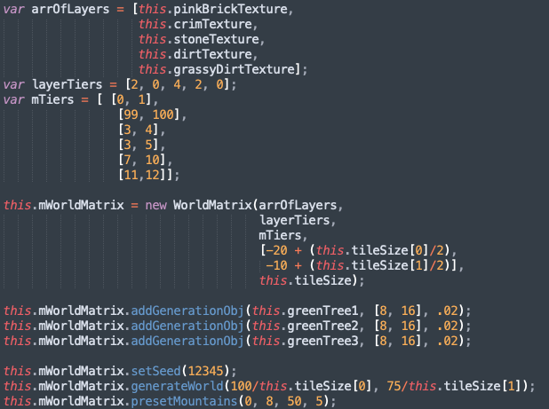

Tutorial or Getting Started
Generating The World is relatively simply. First you need to setup the WorldMatrix system. by providing a collection of tile textures as well as the appropriate layers those textures can occupy. Each layer is tiered in array, defining the vertical positions a given layer can occupy
After you've finished defining the world matrix you can then call generateWorld() to generate the world. Including any additional customization such as presets
and objects.
Look at the following picture down below for the code example on how-to generating the world.
Class WorldGenerator
WorldGenerator class is the core class that provides most generation functionality
WorldMatrix(layers, layersTiers, tiers, tilePosition, tileSize)
The layers variable/param holds the texture arrays, needs to be ordered the same as other arrays. The bottom layer is the first element and the top layer is in the last element.
The layerTiers param holds an array of numbers, from 0 to 4, which represents a tier value to a layer at the same index.
tier should be an array of arrays, with a fixed length of 5. each array inside tier should be a series of 2 numbers [lower bound, upper bound]. Each bound signifies the minimum height of element of that tier and the maximum height respectively. Example: tier = [ [0, 1], [2, 8], [3, 6], [5, 10], [0, 100] ]; keep in mind the tiers will be considered in order [1, 2, 3, 4, 5]
The tilePosition determines the starting position of where the object will generate The world.
The tileSize determines the size of every tile in the world matrix. The proportions are not limited to square figures but also rectangular ones.
getMatrix()
Returns an array of arrays which hold tile objects, with the complete array representing the world
setMatrix(matrix)
Replaces the current world with a passed in one. Usage is mainly in testing edge cases
getLayers()
Returns the array of layers in their current order. If randomized beforehand, it will return the randomized array.
setLayers(arrOfLayers)
Sets the array of layers to the passed in array, staying true to the order of the passed in arrays
getLayersTiers()
Returns the array of tiers while directly correspond to the layers, even after randomization.
setLayersTiers(arrOfLayerTiers)
Sets the current array of layer tiers to the passed in version, staying true to the order it was passed in as.
getTiers()
This will return the array of tiers, which itself is an array of bounds.
setTiers(tiers)
This will set the current tier list with another passed in version. This will not affect any already created worlds but will affect future worlds
setSeed()
Sets the seed for the mersenne twister seed generator. Accepts integers only.
draw(cam, indexX1, indexY1, indexX2, indexY2)
Draw the world matrix, element by element, to the element according to the set indexes on the parameters.
drawInfinite()
Draws the world matrix without a defined set of bounds; useful for something like an infinitely generating world.
randomizeLayers()
Will randomize the orders of the layers of the WorldMatrix object
generateWorld(numOfColumns, height)
Will pseudo randomly generate the world based on the determined parameters set. numOfColumns determines how many column arrays of the World matrix will be generated (Width of the world). And the height parameter determines the height limit as the world will generate upwards based on the defined starting tile position field
attemptObjGeneration(colNumber)
Attempts to generate the objects given in the generationObject field on a given column number.
addColumn(index, xPos, startY, height)
Adds more column to the world matrix on a given index, and requires xPos and startY for the tile position and the maximum height. The function is useful for world matrix size management.
removeColumn(columnNum)
Removes a column/array of the world matrix on a given columnNum. Useful for world matrix size management.
smoothTerrain()
Will either add a tile or delete a tile if two adjacent columns are more than one block apart in height. To reduce the spiky-ness of the generated terrain.
addGenerationObj(texture, size, generationRate)
Add an object for the world generator to include in its generation. Requires the texture of the object and the size and also the generation rate between 0 and 1. Perfect for Adding non-tile or non-block game object.
removeGenerationObj(index)
Selectively remove an already generated object in the world. Given an index which indicates the column or the array the object is located at.
cullGeneratedObj(minX, maxX, minY, maxY)
Culls any generated object outside of a given boundary, determined by the parameters.
emptySpaces(tile, horizClearChance, vertClearChance)
Helper function to create empty pockets in terrain, starting from the parameter Tile. Offers a horizontal and vertical clear chance to determine likelihood of Getting emptied as well.
updateNeighbors(tileColIndex,tileRowIndex)
Updates the neighbor tiles of a tile at a given column & row index.
getTile(xPos, yPos)
Gets or returns a tile based on world coordinates
insertStructure(xRange, yRange, percent, struct)
Allows the user to insert user created/defined terrain structures. Given the xRange and yRange of the world matrix. Percentage chance of it appearing (0 to 100) and also the structure matrix itself.
presetHills(xStart, xEnd, variance)
Generates Hills terrain presets, must be called after the generateWorld function Requires the range of the x coordinates (xStart, and xEnd) and the variance parameter which determines the maximum height it can generate the hill.
presetPlains(xStart, xEnd, variance)
Generates Plains terrain presets, must be called after the generateWorld function Requires the range of the x coordinates (xStart, and xEnd) and the variance Parameter which determines the maximum height it can generate the plains.
presetMountains(xStart, xEnd, variance, incr)
Generates mountain terrain presets, must be called after the generateWorld Function. Requires the range of the x coordinates (xStart, and xEnd) and the Variance parameter which determines the maximum height it can generate the Mountain. And also an incr parameter which determines how much the distance or long the blocks between incremental height.
presetPlateau(xStart, xEnd, variance, incr)
Generates plateau terrain presets, must be called after the generateWorld Function. Requires the range of the x coordinates (xStart, and xEnd) and the Variance parameter which determines the maximum height it can generate the plateau. And also an incr parameter which determines how much the distance or long the blocks between incremental height.
presetValleys(xStart, xEnd, variance, incr)
Generates valley terrain presets, must be called after the generateWorld Function. Requires the range of the x coordinates (xStart, and xEnd) and the Variance parameter which determines the maximum height it can generate the valleys. And also an incr parameter which determines how much the distance or long the blocks between incremental depth.
Class Tile
The Foundation of each generated terrain
Tile(textureAsset, posArr, sizeArr)
Tile constructor. Takes a string referencing a path to a texture image as its first parameter, a 2-index array defining its (x,y) position as its second parameter, and a 2-index array defining its (width, height) dimensions as the third parameter. Defines a new tile with the given parameters, as well as a bounding box set according to the position & size parameters passed to the constructor.
clone()
Creates & returns an identical copy of a GenerationObject.
getTextureAsset()
Returns the texture belonging to a given Tile object
setTexture(texture)
Takes a TextureRenderable object (called “texture”) and sets it as the Tile’s assigned TextureRenderable
getTexture()
Returns a reference to the TextureRenderable object assigned to this Tile
setTopNeighbor(tile)
Takes a reference to another Tile as a parameter, and assigns that to this Tile’s “topNeighbor” property, defining the parameter Tile as this Tile’s top neighbor.
setBotNeighbor(tile)
Takes a reference to another Tile as a parameter, and assigns that to this Tile’s “botNeighbor” property, defining the parameter Tile as this Tile’s bottom neighbor.
setLeftNeighbor(tile)
Takes a reference to another Tile as a parameter, and assigns that to this Tile’s “leftNeighbor” property, defining the parameter Tile as this Tile’s left neighbor.
setRightNeighbor(tile)
Takes a reference to another Tile as a parameter, and assigns that to this Tile’s “rightNeighbor” property, defining the parameter Tile as this Tile’s right neighbor.
getBound()
Returns a reference to this Tile’s bounding box
objCollision(objectBound)
Uses the Tile’s bounding box and its built-in intersectsBound() function to determine if a collision has occurred between this tile and the parameter objectBound
Class UserStruct
Allows user-specified terrain structure to be inserted into the generated world.
userStruct(struct)
Accepts a user-specified structure matrix filled with tile objects
getStruct()
Return the user-specified structure matrix
setStruct(struct)
Set the user-specified structure matrix
getSeed()
Return the mersenne twister seed generator object
setSeed(seed)
Sets the seed for the mersenne twister seed generator. Accepts integers only.
addNoise(min, variance)
Adds noise or randomness to the structure. Min param determines the minimum Amount of the noise and the variance is the maximum amount of the noise per column.
cleanStruct()
Cleans the bottom row of the structure matrix.
Class GenerationObject
Allow non-tile object to be inserted inside the generated world
GenerationObject(textureAsset, sizeArr, generationRate)
GenerationObject constructor. Takes a string referencing a path to a texture image as its first parameter, a 2-index array defining its (width, height) dimensions as the second parameter, and a generation rate as its third parameter. Defines a new GenerationObject with the given texture and size, and maintains the generation rate as a property defining how often it should show up in the world.
clone()
Creates & returns an identical copy of a GenerationObject.
getTextureAsset()
Access the texture of your chosen object.
getRenderable()
Access the TextureRenderable of your chosen object.
setPos(xPos, yPos)
Set the position of the object in your world, defined at its center.
xPos defines the x-position in world coordinates.
yPos defines the y-position in world coordinates.
getPos()
Returns the (x,y) world coordinates of your object, defined as the object’s center.
getSize()
Returns a 2-element array describing the object’s size. The first index defines its width, the second defines its height.
addBound(posArr, sizeArr)
Allows you to add a bounding box to the object, in order to utilize the functionality of the BoundingBox class with your object.
posArr requires a 2-element position array, with the first index being the x-position and the second being the y-position of your desired bounding box.
sizeArr requires a 2-element size array, with the first index being the width and the second being the height of your desired bounding box.
getBound()
Returns the bounding box of your object. Note that this requires a bounding box to have been defined prior.
getRate()
Returns the spawn rate of your object.
objCollision(objBound)
A collision detection function. Utilizes the built-in intersectsBound() function within the BoundingBox class to detect whether or not a collision has occurred with the bounding box defined by objBound.